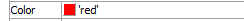
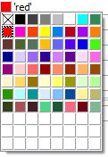
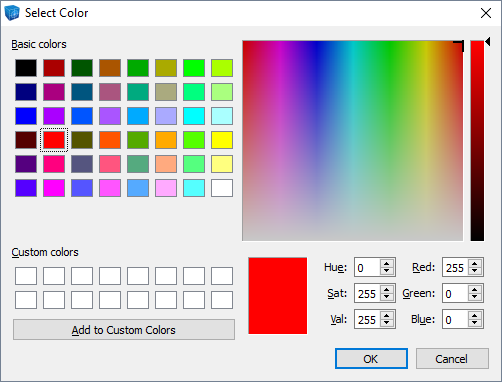

颜色
颜色

设置该项的颜色。
颜色：使用色板控件设置颜色。颜色名称（如果有）或 RGB 值（如果没有）显示在色板右侧。
关于调色板控件

单击色板控件会打开调色板。调色板上提供 64 种固定颜色。调色板的左上角位置为“无”，用一个“x”表示。将某一项设为该颜色会使其不可见。当前所选颜色由该颜色色板周围的虚线边框表示。调色板底部还提供三行（额外 24 个位置）未定义的颜色。在提供自定义颜色之前，这些色板显示为白色；在仍未定义时选择其中之一，将被视为将其指定为顶行的“白色”。
右键单击调色板上的任意色板都会打开一个对话框，允许定义新颜色。

颜色定义并不限于自定义位置上的色板；64 种预定义颜色集合中的现有颜色也可以重新定义。调色板中颜色的所有（重新）定义都是永久的。
注意
自动分配颜色时，程序仅限于调色板上显示的前 64 种颜色。如果需要超过 64 种颜色，则会循环使用最初的 64 种颜色，直到所有颜色分配完成；最后的 24 种“自定义”颜色不包含在程序执行的任何自动着色中。
| 这些内容对您有帮助吗？… 版权与免责声明 | FLAC3D © 2019, Itasca | 原文更新于 2020 年 10 月 8 日 |